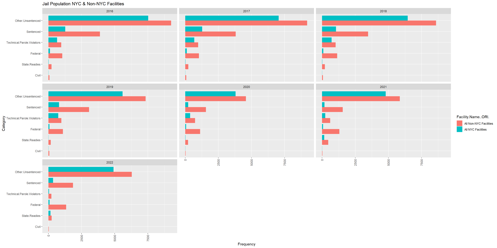
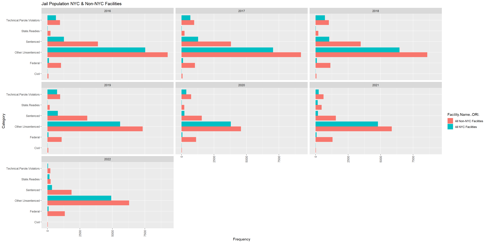
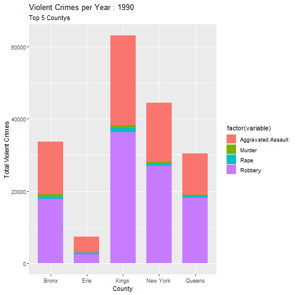

3 Results
Code
jail_crime_data_nyc_nonnyc <- jail_crime_data_nyc_nonnyc %>%
filter(Year %in% unique(jail_crime_data_nyc_nonnyc$Year[jail_crime_data_nyc_nonnyc$Facility.Name..ORI. == "All NYC Facilities"]) &
Year %in% unique(jail_crime_data_nyc_nonnyc$Year[jail_crime_data_nyc_nonnyc$Facility.Name..ORI. == "All Non-NYC Facilities"]))Code
counts3 <- jail_crime_data_nyc_nonnyc %>%
pivot_longer(cols = c('Sentenced', 'Civil', 'Federal', 'Technical.Parole.Violators', 'State.Readies', 'Other.Unsentenced'), names_to = "Category", values_to = "Freq") %>%
group_by(Year, `Facility.Name..ORI.`, Category) %>%
summarize(Freq = sum(Freq), .groups = "drop") %>%
ungroup()
ggplot(counts3, aes(x = Category, y = Freq, fill = `Facility.Name..ORI.`)) +
geom_col(position = "dodge") +
facet_wrap(~Year)+
labs(title = "Jail Population NYC & Non-NYC Facilities",
x = "Category",
y = "Frequency") + theme(axis.text.x = element_text(angle = 90, vjust = 0.5, hjust = 1)) + coord_flip()

[1] "County" "Year" "Crime.Type" "Total.Incidents"
[5] "group" Code
all_subcategories <- c(n,race_list, color_list, sexual_orientation_list, gender_orientation_list,disability_list,age_list,religion_list)
# Create a new dataframe with selected columns
new_df <- hate_crime_data_types[, all_subcategories, drop = FALSE]
combined_df <- new_df %>%
group_by(Year) %>%
summarise_all(sum) Code
combined_df <- combined_df %>%
mutate(Year = as.Date(paste(Year), format = "%Y"))
melted_data <- tidyr::gather(combined_df, key = "Group", value = "Count", -Year)
plot_ly(melted_data, x = ~Year, y = ~Count, color = ~Group, type = 'scatter', mode = 'lines') %>%
layout(title = "Hate Crimes Relationships Over Time",
xaxis = list(title = "Year"),
yaxis = list(title = "Count"),
showlegend = TRUE)Warning in RColorBrewer::brewer.pal(N, "Set2"): n too large, allowed maximum for palette Set2 is 8
Returning the palette you asked for with that many colors
Warning in RColorBrewer::brewer.pal(N, "Set2"): n too large, allowed maximum for palette Set2 is 8
Returning the palette you asked for with that many colors
County Year variable value
1 Bronx 1990 Burglary 19010
2 Erie 1990 Burglary 12019
3 Kings 1990 Burglary 39041
4 New York 1990 Burglary 29074
5 Queens 1990 Burglary 29273
6 Bronx 1990 Larceny 29115
7 Erie 1990 Larceny 27575
8 Kings 1990 Larceny 54827
9 New York 1990 Larceny 122704
10 Queens 1990 Larceny 55165
11 Bronx 1990 Motor.Vehicle.Theft 22969
12 Erie 1990 Motor.Vehicle.Theft 5330
13 Kings 1990 Motor.Vehicle.Theft 45054
14 New York 1990 Motor.Vehicle.Theft 21574
15 Queens 1990 Motor.Vehicle.Theft 50300
16 Bronx 1991 Burglary 18463
17 Erie 1991 Burglary 12411
18 Kings 1991 Burglary 36004
19 New York 1991 Burglary 26120
20 Queens 1991 Burglary 27912
21 Bronx 1991 Larceny 27506
22 Erie 1991 Larceny 28265
23 Kings 1991 Larceny 50983
24 New York 1991 Larceny 122015
25 Queens 1991 Larceny 50485
26 Bronx 1991 Motor.Vehicle.Theft 20587
27 Erie 1991 Motor.Vehicle.Theft 6461
28 Kings 1991 Motor.Vehicle.Theft 43458
29 New York 1991 Motor.Vehicle.Theft 19833
30 Queens 1991 Motor.Vehicle.Theft 49987
31 Bronx 1992 Burglary 17699
32 Erie 1992 Burglary 12289
33 Kings 1992 Burglary 32561
34 New York 1992 Burglary 24853
35 Queens 1992 Burglary 25185
36 Bronx 1992 Larceny 26070
37 Erie 1992 Larceny 27780
38 Kings 1992 Larceny 47996
39 New York 1992 Larceny 107788
40 Queens 1992 Larceny 48762
41 Bronx 1992 Motor.Vehicle.Theft 17732
42 Erie 1992 Motor.Vehicle.Theft 7719
43 Kings 1992 Motor.Vehicle.Theft 39460
44 New York 1992 Motor.Vehicle.Theft 17518
45 Queens 1992 Motor.Vehicle.Theft 47133
46 Bronx 1993 Burglary 18763
47 Erie 1993 Burglary 11181
48 Kings 1993 Burglary 30659
49 New York 1993 Burglary 22521
50 Queens 1993 Burglary 23843
51 Bronx 1993 Larceny 26273
52 Erie 1993 Larceny 26442
53 Kings 1993 Larceny 50631
54 New York 1993 Larceny 98346
55 Queens 1993 Larceny 53464
56 Bronx 1993 Motor.Vehicle.Theft 15656
57 Erie 1993 Motor.Vehicle.Theft 7675
58 Kings 1993 Motor.Vehicle.Theft 33015
59 New York 1993 Motor.Vehicle.Theft 15684
60 Queens 1993 Motor.Vehicle.Theft 43144
61 Bronx 1994 Burglary 16440
62 Erie 1994 Burglary 10513
63 Kings 1994 Burglary 26428
64 New York 1994 Burglary 20031
65 Queens 1994 Burglary 22302
66 Bronx 1994 Larceny 25420
67 Erie 1994 Larceny 26073
68 Kings 1994 Larceny 45928
69 New York 1994 Larceny 86154
70 Queens 1994 Larceny 45875
71 Bronx 1994 Motor.Vehicle.Theft 14607
72 Erie 1994 Motor.Vehicle.Theft 6319
73 Kings 1994 Motor.Vehicle.Theft 27830
74 New York 1994 Motor.Vehicle.Theft 13003
75 Queens 1994 Motor.Vehicle.Theft 35461
76 Bronx 1995 Burglary 13996
77 Erie 1995 Burglary 10282
78 Kings 1995 Burglary 21874
79 New York 1995 Burglary 16770
80 Queens 1995 Burglary 18951
81 Bronx 1995 Larceny 23648
82 Erie 1995 Larceny 25626
83 Kings 1995 Larceny 40340
84 New York 1995 Larceny 71746
85 Queens 1995 Larceny 40627
86 Bronx 1995 Motor.Vehicle.Theft 11093
87 Erie 1995 Motor.Vehicle.Theft 5810
88 Kings 1995 Motor.Vehicle.Theft 21632
89 New York 1995 Motor.Vehicle.Theft 10027
90 Queens 1995 Motor.Vehicle.Theft 26568
91 Bronx 1996 Burglary 11374
92 Erie 1996 Burglary 9320
93 Kings 1996 Burglary 18796
94 New York 1996 Burglary 13469
95 Queens 1996 Burglary 15887
96 Bronx 1996 Larceny 22006
97 Erie 1996 Larceny 25332
98 Kings 1996 Larceny 36240
99 New York 1996 Larceny 63285
100 Queens 1996 Larceny 36766
101 Bronx 1996 Motor.Vehicle.Theft 9777
102 Erie 1996 Motor.Vehicle.Theft 6022
103 Kings 1996 Motor.Vehicle.Theft 16825
104 New York 1996 Motor.Vehicle.Theft 8638
105 Queens 1996 Motor.Vehicle.Theft 22384
106 Bronx 1997 Burglary 9524
107 Erie 1997 Burglary 8834
108 Kings 1997 Burglary 16994
109 New York 1997 Burglary 11068
110 Queens 1997 Burglary 14886
111 Bronx 1997 Larceny 20323
112 Erie 1997 Larceny 24911
113 Kings 1997 Larceny 37139
114 New York 1997 Larceny 62233
115 Queens 1997 Larceny 33107
116 Bronx 1997 Motor.Vehicle.Theft 8187
117 Erie 1997 Motor.Vehicle.Theft 5315
118 Kings 1997 Motor.Vehicle.Theft 14624
119 New York 1997 Motor.Vehicle.Theft 6778
120 Queens 1997 Motor.Vehicle.Theft 20069
121 Bronx 1998 Burglary 8210
122 Erie 1998 Burglary 7800
123 Kings 1998 Burglary 15055
124 New York 1998 Burglary 9637
125 Queens 1998 Burglary 12039
126 Bronx 1998 Larceny 18558
127 Erie 1998 Larceny 22965
128 Kings 1998 Larceny 37296
129 New York 1998 Larceny 56365
130 Queens 1998 Larceny 30866
131 Bronx 1998 Motor.Vehicle.Theft 7305
132 Erie 1998 Motor.Vehicle.Theft 4025
133 Kings 1998 Motor.Vehicle.Theft 12973
134 New York 1998 Motor.Vehicle.Theft 5749
135 Queens 1998 Motor.Vehicle.Theft 16268
136 Bronx 1999 Burglary 7582
137 Erie 1999 Burglary 6754
138 Kings 1999 Burglary 13295
139 New York 1999 Burglary 7844
140 Queens 1999 Burglary 10694
141 Bronx 1999 Larceny 18376
142 Erie 1999 Larceny 21090
143 Kings 1999 Larceny 35084
144 New York 1999 Larceny 53073
145 Queens 1999 Larceny 29889
146 Bronx 1999 Motor.Vehicle.Theft 7150
147 Erie 1999 Motor.Vehicle.Theft 3884
148 Kings 1999 Motor.Vehicle.Theft 12049
149 New York 1999 Motor.Vehicle.Theft 4517
150 Queens 1999 Motor.Vehicle.Theft 14315
151 Bronx 2000 Burglary 7312
152 Erie 2000 Burglary 6233
153 Kings 2000 Burglary 12264
154 New York 2000 Burglary 7075
155 Queens 2000 Burglary 9311
156 Bronx 2000 Larceny 19101
157 Erie 2000 Larceny 21216
158 Kings 2000 Larceny 34776
159 New York 2000 Larceny 52453
160 Queens 2000 Larceny 28512
161 Bronx 2000 Motor.Vehicle.Theft 6642
162 Erie 2000 Motor.Vehicle.Theft 3477
163 Kings 2000 Motor.Vehicle.Theft 11261
164 New York 2000 Motor.Vehicle.Theft 4168
165 Queens 2000 Motor.Vehicle.Theft 12490
166 Bronx 2001 Burglary 5702
167 Erie 2001 Burglary 6057
168 Kings 2001 Burglary 10555
169 New York 2001 Burglary 6241
170 Queens 2001 Burglary 8139
171 Bronx 2001 Larceny 20303
172 Erie 2001 Larceny 21117
173 Kings 2001 Larceny 32863
174 New York 2001 Larceny 49020
175 Queens 2001 Larceny 27518
176 Bronx 2001 Motor.Vehicle.Theft 5569
177 Erie 2001 Motor.Vehicle.Theft 3436
178 Kings 2001 Motor.Vehicle.Theft 9187
179 New York 2001 Motor.Vehicle.Theft 3487
180 Queens 2001 Motor.Vehicle.Theft 10690
181 Bronx 2002 Burglary 5057
182 Erie 2002 Burglary 5698
183 Kings 2002 Burglary 10139
184 New York 2002 Burglary 5771
185 Queens 2002 Burglary 8125
186 Bronx 2002 Larceny 19585
187 Erie 2002 Larceny 18912
188 Kings 2002 Larceny 32728
189 New York 2002 Larceny 45801
190 Queens 2002 Larceny 26986
191 Bronx 2002 Motor.Vehicle.Theft 5281
192 Erie 2002 Motor.Vehicle.Theft 3024
193 Kings 2002 Motor.Vehicle.Theft 8374
194 New York 2002 Motor.Vehicle.Theft 3369
195 Queens 2002 Motor.Vehicle.Theft 9153
196 Bronx 2003 Burglary 5027
197 Erie 2003 Burglary 5981
198 Kings 2003 Burglary 9483
199 New York 2003 Burglary 5765
200 Queens 2003 Burglary 7226
201 Bronx 2003 Larceny 19851
202 Erie 2003 Larceny 20486
203 Kings 2003 Larceny 32596
204 New York 2003 Larceny 43531
205 Queens 2003 Larceny 24671
206 Bronx 2003 Motor.Vehicle.Theft 4812
207 Erie 2003 Motor.Vehicle.Theft 3312
208 Kings 2003 Motor.Vehicle.Theft 7725
209 New York 2003 Motor.Vehicle.Theft 2981
210 Queens 2003 Motor.Vehicle.Theft 7439
211 Bronx 2004 Burglary 4708
212 Erie 2004 Burglary 5785
213 Kings 2004 Burglary 8901
214 New York 2004 Burglary 5256
215 Queens 2004 Burglary 6434
216 Bronx 2004 Larceny 18904
217 Erie 2004 Larceny 19954
218 Kings 2004 Larceny 32551
219 New York 2004 Larceny 43504
220 Queens 2004 Larceny 24778
221 Bronx 2004 Motor.Vehicle.Theft 4530
222 Erie 2004 Motor.Vehicle.Theft 2850
223 Kings 2004 Motor.Vehicle.Theft 6775
224 New York 2004 Motor.Vehicle.Theft 2557
225 Queens 2004 Motor.Vehicle.Theft 6607
226 Bronx 2005 Burglary 4082
227 Erie 2005 Burglary 6267
228 Kings 2005 Burglary 7877
229 New York 2005 Burglary 4703
230 Queens 2005 Burglary 5745
231 Bronx 2005 Larceny 18487
232 Erie 2005 Larceny 20242
233 Kings 2005 Larceny 32977
234 New York 2005 Larceny 41712
235 Queens 2005 Larceny 23535
236 Bronx 2005 Motor.Vehicle.Theft 4130
237 Erie 2005 Motor.Vehicle.Theft 2932
238 Kings 2005 Motor.Vehicle.Theft 6016
239 New York 2005 Motor.Vehicle.Theft 2087
240 Queens 2005 Motor.Vehicle.Theft 5592
241 Bronx 2006 Burglary 3776
242 Erie 2006 Burglary 6688
243 Kings 2006 Burglary 7415
244 New York 2006 Burglary 4631
245 Queens 2006 Burglary 5640
246 Bronx 2006 Larceny 17526
247 Erie 2006 Larceny 18286
248 Kings 2006 Larceny 30785
249 New York 2006 Larceny 39225
250 Queens 2006 Larceny 23402
251 Bronx 2006 Motor.Vehicle.Theft 3431
252 Erie 2006 Motor.Vehicle.Theft 2592
253 Kings 2006 Motor.Vehicle.Theft 5176
254 New York 2006 Motor.Vehicle.Theft 1737
255 Queens 2006 Motor.Vehicle.Theft 4964
256 Bronx 2007 Burglary 3756
257 Erie 2007 Burglary 6486
258 Kings 2007 Burglary 6917
259 New York 2007 Burglary 3794
260 Queens 2007 Burglary 5688
261 Bronx 2007 Larceny 17617
262 Erie 2007 Larceny 19451
263 Kings 2007 Larceny 30586
264 New York 2007 Larceny 39743
265 Queens 2007 Larceny 23151
266 Bronx 2007 Motor.Vehicle.Theft 2991
267 Erie 2007 Motor.Vehicle.Theft 2771
268 Kings 2007 Motor.Vehicle.Theft 4292
269 New York 2007 Motor.Vehicle.Theft 1506
270 Queens 2007 Motor.Vehicle.Theft 3945
271 Bronx 2008 Burglary 3408
272 Erie 2008 Burglary 6206
273 Kings 2008 Burglary 6758
274 New York 2008 Burglary 3845
275 Queens 2008 Burglary 5046
276 Bronx 2008 Larceny 17608
277 Erie 2008 Larceny 20072
278 Kings 2008 Larceny 32022
279 New York 2008 Larceny 40380
280 Queens 2008 Larceny 22765
281 Bronx 2008 Motor.Vehicle.Theft 2923
282 Erie 2008 Motor.Vehicle.Theft 2362
283 Kings 2008 Motor.Vehicle.Theft 3872
284 New York 2008 Motor.Vehicle.Theft 1330
285 Queens 2008 Motor.Vehicle.Theft 3849
286 Bronx 2009 Burglary 3563
287 Erie 2009 Burglary 5993
288 Kings 2009 Burglary 6262
289 New York 2009 Burglary 3612
290 Queens 2009 Burglary 4714
291 Bronx 2009 Larceny 16525
292 Erie 2009 Larceny 19730
293 Kings 2009 Larceny 30292
294 New York 2009 Larceny 39495
295 Queens 2009 Larceny 21612
296 Bronx 2009 Motor.Vehicle.Theft 2425
297 Erie 2009 Motor.Vehicle.Theft 2018
298 Kings 2009 Motor.Vehicle.Theft 3459
299 New York 2009 Motor.Vehicle.Theft 1082
300 Queens 2009 Motor.Vehicle.Theft 3300
301 Bronx 2010 Burglary 3223
302 Erie 2010 Burglary 6534
303 Kings 2010 Burglary 6421
304 New York 2010 Burglary 2967
305 Queens 2010 Burglary 4704
306 Bronx 2010 Larceny 16552
307 Erie 2010 Larceny 19672
308 Kings 2010 Larceny 30900
309 New York 2010 Larceny 38514
310 Queens 2010 Larceny 20895
311 Bronx 2010 Motor.Vehicle.Theft 2163
312 Erie 2010 Motor.Vehicle.Theft 1834
313 Kings 2010 Motor.Vehicle.Theft 3337
314 New York 2010 Motor.Vehicle.Theft 987
315 Queens 2010 Motor.Vehicle.Theft 3484
316 Bronx 2011 Burglary 3395
317 Erie 2011 Burglary 6477
318 Kings 2011 Burglary 6144
319 New York 2011 Burglary 3082
320 Queens 2011 Burglary 4815
321 Bronx 2011 Larceny 17358
322 Erie 2011 Larceny 19196
323 Kings 2011 Larceny 31752
324 New York 2011 Larceny 37856
325 Queens 2011 Larceny 21588
326 Bronx 2011 Motor.Vehicle.Theft 2110
327 Erie 2011 Motor.Vehicle.Theft 1537
328 Kings 2011 Motor.Vehicle.Theft 2936
329 New York 2011 Motor.Vehicle.Theft 899
330 Queens 2011 Motor.Vehicle.Theft 3149
331 Bronx 2012 Burglary 3058
332 Erie 2012 Burglary 6026
333 Kings 2012 Burglary 6585
334 New York 2012 Burglary 3085
335 Queens 2012 Burglary 5181
336 Bronx 2012 Larceny 18454
337 Erie 2012 Larceny 19734
338 Kings 2012 Larceny 32752
339 New York 2012 Larceny 38735
340 Queens 2012 Larceny 21550
341 Bronx 2012 Motor.Vehicle.Theft 1649
342 Erie 2012 Motor.Vehicle.Theft 1481
343 Kings 2012 Motor.Vehicle.Theft 2680
344 New York 2012 Motor.Vehicle.Theft 834
345 Queens 2012 Motor.Vehicle.Theft 2715
346 Bronx 2013 Burglary 2795
347 Erie 2013 Burglary 5222
348 Kings 2013 Burglary 5635
349 New York 2013 Burglary 2775
350 Queens 2013 Burglary 4732
351 Bronx 2013 Larceny 19016
352 Erie 2013 Larceny 18729
353 Kings 2013 Larceny 32557
354 New York 2013 Larceny 39647
355 Queens 2013 Larceny 22030
356 Bronx 2013 Motor.Vehicle.Theft 1449
357 Erie 2013 Motor.Vehicle.Theft 1255
358 Kings 2013 Motor.Vehicle.Theft 2606
359 New York 2013 Motor.Vehicle.Theft 742
360 Queens 2013 Motor.Vehicle.Theft 2411
361 Bronx 2014 Burglary 2739
362 Erie 2014 Burglary 4638
363 Kings 2014 Burglary 5719
364 New York 2014 Burglary 2678
365 Queens 2014 Burglary 4191
366 Bronx 2014 Larceny 19104
367 Erie 2014 Larceny 18540
368 Kings 2014 Larceny 31273
369 New York 2014 Larceny 35791
370 Queens 2014 Larceny 21434
371 Bronx 2014 Motor.Vehicle.Theft 1474
372 Erie 2014 Motor.Vehicle.Theft 1303
373 Kings 2014 Motor.Vehicle.Theft 2655
374 New York 2014 Motor.Vehicle.Theft 770
375 Queens 2014 Motor.Vehicle.Theft 2605
376 Bronx 2015 Burglary 2530
377 Erie 2015 Burglary 4306
378 Kings 2015 Burglary 5077
379 New York 2015 Burglary 2538
380 Queens 2015 Burglary 3396
381 Bronx 2015 Larceny 18767
382 Erie 2015 Larceny 16695
383 Kings 2015 Larceny 30015
384 New York 2015 Larceny 35156
385 Queens 2015 Larceny 20400
386 Bronx 2015 Motor.Vehicle.Theft 1593
387 Erie 2015 Motor.Vehicle.Theft 1302
388 Kings 2015 Motor.Vehicle.Theft 2480
389 New York 2015 Motor.Vehicle.Theft 824
390 Queens 2015 Motor.Vehicle.Theft 2270
391 Bronx 2016 Burglary 2459
392 Erie 2016 Burglary 4152
393 Kings 2016 Burglary 3832
394 New York 2016 Burglary 2206
395 Queens 2016 Burglary 3056
396 Bronx 2016 Larceny 19191
397 Erie 2016 Larceny 16692
398 Kings 2016 Larceny 29366
399 New York 2016 Larceny 34867
400 Queens 2016 Larceny 19455
401 Bronx 2016 Motor.Vehicle.Theft 1367
402 Erie 2016 Motor.Vehicle.Theft 1180
403 Kings 2016 Motor.Vehicle.Theft 2081
404 New York 2016 Motor.Vehicle.Theft 741
405 Queens 2016 Motor.Vehicle.Theft 1933
406 Bronx 2017 Burglary 2108
407 Erie 2017 Burglary 3753
408 Kings 2017 Burglary 3659
409 New York 2017 Burglary 2215
410 Queens 2017 Burglary 2721
411 Bronx 2017 Larceny 19509
412 Erie 2017 Larceny 15013
413 Kings 2017 Larceny 29589
414 New York 2017 Larceny 35622
415 Queens 2017 Larceny 19373
416 Bronx 2017 Motor.Vehicle.Theft 1356
417 Erie 2017 Motor.Vehicle.Theft 1140
418 Kings 2017 Motor.Vehicle.Theft 1925
419 New York 2017 Motor.Vehicle.Theft 638
420 Queens 2017 Motor.Vehicle.Theft 1582
421 Bronx 2018 Burglary 2095
422 Erie 2018 Burglary 3490
423 Kings 2018 Burglary 3585
424 New York 2018 Burglary 2455
425 Queens 2018 Burglary 2360
426 Bronx 2018 Larceny 19434
427 Erie 2018 Larceny 14713
428 Kings 2018 Larceny 30417
429 New York 2018 Larceny 37682
430 Queens 2018 Larceny 20344
431 Bronx 2018 Motor.Vehicle.Theft 1312
432 Erie 2018 Motor.Vehicle.Theft 1167
433 Kings 2018 Motor.Vehicle.Theft 1720
434 New York 2018 Motor.Vehicle.Theft 742
435 Queens 2018 Motor.Vehicle.Theft 1575
436 Bronx 2019 Burglary 1750
437 Erie 2019 Burglary 2618
438 Kings 2019 Burglary 3203
439 New York 2019 Burglary 2333
440 Queens 2019 Burglary 2298
441 Bronx 2019 Larceny 19081
442 Erie 2019 Larceny 13914
443 Kings 2019 Larceny 28505
444 New York 2019 Larceny 37064
445 Queens 2019 Larceny 19231
446 Bronx 2019 Motor.Vehicle.Theft 1267
447 Erie 2019 Motor.Vehicle.Theft 1029
448 Kings 2019 Motor.Vehicle.Theft 1833
449 New York 2019 Motor.Vehicle.Theft 682
450 Queens 2019 Motor.Vehicle.Theft 1561
451 Bronx 2020 Burglary 2230
452 Erie 2020 Burglary 2680
453 Kings 2020 Burglary 4099
454 New York 2020 Burglary 4449
455 Queens 2020 Burglary 2842
456 Bronx 2020 Larceny 18728
457 Erie 2020 Larceny 13386
458 Kings 2020 Larceny 29306
459 New York 2020 Larceny 32568
460 Queens 2020 Larceny 22431
461 Bronx 2020 Motor.Vehicle.Theft 2130
462 Erie 2020 Motor.Vehicle.Theft 1965
463 Kings 2020 Motor.Vehicle.Theft 2943
464 New York 2020 Motor.Vehicle.Theft 1395
465 Queens 2020 Motor.Vehicle.Theft 2544
466 Bronx 2021 Burglary 1925
467 Erie 2021 Burglary 2168
468 Kings 2021 Burglary 3478
469 New York 2021 Burglary 3485
470 Queens 2021 Burglary 2445
471 Bronx 2021 Larceny 18432
472 Erie 2021 Larceny 12506
473 Kings 2021 Larceny 28819
474 New York 2021 Larceny 36710
475 Queens 2021 Larceny 23936
476 Bronx 2021 Motor.Vehicle.Theft 3135
477 Erie 2021 Motor.Vehicle.Theft 2293
478 Kings 2021 Motor.Vehicle.Theft 2930
479 New York 2021 Motor.Vehicle.Theft 1627
480 Queens 2021 Motor.Vehicle.Theft 2687
481 Bronx 2022 Burglary 2582
482 Erie 2022 Burglary 2373
483 Kings 2022 Burglary 4104
484 New York 2022 Burglary 4565
485 Queens 2022 Burglary 2999
486 Bronx 2022 Larceny 24044
487 Erie 2022 Larceny 14718
488 Kings 2022 Larceny 37481
489 New York 2022 Larceny 49931
490 Queens 2022 Larceny 31762
491 Bronx 2022 Motor.Vehicle.Theft 4052
492 Erie 2022 Motor.Vehicle.Theft 2580
493 Kings 2022 Motor.Vehicle.Theft 3708
494 New York 2022 Motor.Vehicle.Theft 1973
495 Queens 2022 Motor.Vehicle.Theft 3725NULL
NULL